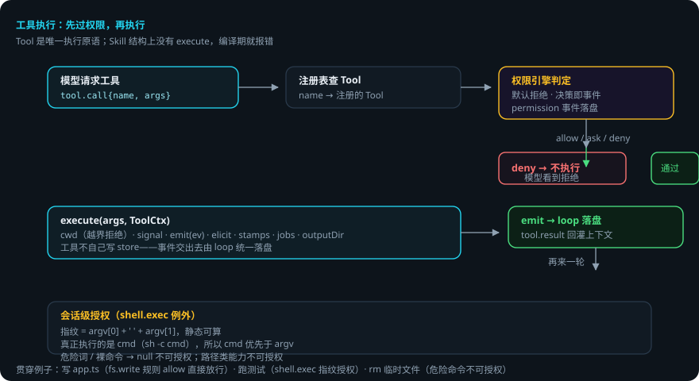
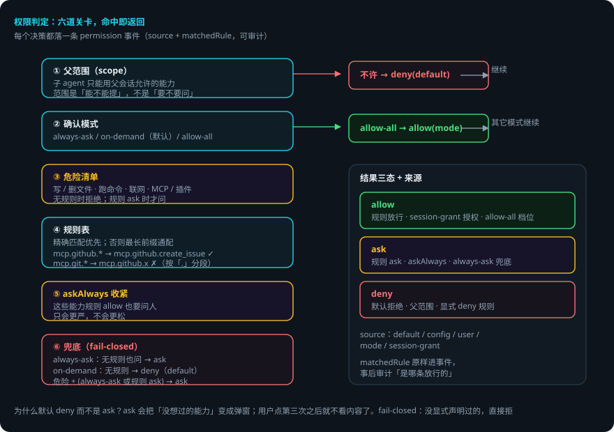

工具与权限运行时
本页回答四个问题：工具怎么定义、怎么执行？权限是怎么判的？什么默认拒绝、什么可以授权？出错了会怎样？ 交互演示：权限判定模拟（选能力与配置，看决策链每一步）。
packages/capability—— Tool 注册表、权限引擎、内置工具、Skill 注册表。 贯穿例子：给登录接口加限流——domi 要写app.ts（fs.write）、跑测试（shell.exec）、改依赖（fs.edit）。
先说结论
- Tool 是唯一执行原语，Skill 不可执行。Skill 结构上没有
execute，加一个就编译期报错。 - 权限默认拒绝，不是默认询问。没显式声明过的能力，直接拒。
- 每个权限决策都产生一条
permission事件——可审计，轨迹里看得见。 - 判定有五道：父范围 → 确认模式 → 危险清单 → 规则表 → askAlways 收紧，最后才到兜底。
- 通配规则按「.」分段：
mcp.git.*管不到mcp.github.x。 shell.exec是唯一可做会话级授权的工具：按命令指纹（argv[0] + ' ' + argv[1]）授权，危险词 / 裸命令不能授权。
用到的词
| 词 | 意思 |
|---|---|
| Tool | 可执行原语：名字 + 能力 + schema + execute。 |
| capability | 能力的类别 id（如 fs.write）。权限按它判定。 |
| 决策 | allow / deny / ask，带来源与命中的规则。 |
| 会话级授权 | 本会话内持续有效的授权（带 grant）。 |
| 危险能力 | 写 / 删文件、跑命令、联网、MCP 与插件工具。 |
| 指纹 | 命令的可静态计算的摘要，用于授权。 |
1. 总体流程


2. Tool：类型层强制 INV-05
interface Tool<A = unknown, R = unknown> {
readonly name: string
readonly capability: CapabilityId // 无此字段无法通过 registerTool 的类型检查
readonly description: string
readonly schema: z.ZodType<A>
readonly inputJsonSchema?: Record<string, unknown> // MCP 工具 schema 原样给
execute(args: A, ctx: ToolCtx): Promise<R>
}
ToolCtx 是工具与外界打交道的全部通道：
| 字段 | 作用 |
|---|---|
cwd |
所有文件访问的根，越界一律拒绝 |
signal |
取消信号 |
emit(ev) |
工具往事件流补事件的通道——工具不自己写 store，事件交出去由 loop 统一落盘 |
elicit? |
向用户要输入 |
stamps? |
过期写保护指纹 |
jobs? |
后台命令 |
outputDir? |
超长输出落盘 |
Skill 结构上没有 execute（写成 execute?: never）：给 Skill 加 execute 在编译期就报错。真正的强制在 kernel：只有 Tool 会被 loop 调用。
3. 权限引擎：默认拒绝，决策即事件
判定链（从上到下，命中即返回）：
- 父范围（scope）：子 agent 只能用父会话允许的能力。范围是「能不能提」——返回 false 直接拒绝，不看规则、不问人。
- 确认模式（permissionsMode）：
always-ask/on-demand（默认）/allow-all。allow-all：跳过所有确认（只剩显式 deny 与父范围）。- 其它模式继续往下。
- 危险清单：危险能力（写 / 删 / 移动文件、跑命令、联网、MCP 与插件工具）——无规则时拒绝，规则 ask 时才问。
- 规则表（rules）：精确匹配优先；没有精确匹配取前缀最长的
前缀.*通配。mcp.github.*管得到mcp.github.create_issue，管不到mcp.githubx.y（按「.」分段）。 - askAlways 收紧：这些能力即使规则说 allow 也要问人；只会更严，不会更松。
- 兜底：
always-ask无规则也问；on-demand无规则拒（默认分支返回 deny，不是 ask）。
为什么默认 deny 而不是 ask？ask 看起来更友好，实际上是把「没想过的能力」变成「弹个窗让用户点同意」，用户点第三次之后就不看内容了。fail-closed 的意思是：没显式声明过的，直接拒。
Decision：allow | deny | ask，带 source（default / config / user / mode / session-grant）、matchedRule、channel（用户在哪个端回答的）、grant（会话级授权）。每个决策都产生一条 permission 事件。
4. 会话级授权：shell.exec 为什么特殊
grantFor：shell.exec 例外地可授权——命令指纹 argv[0] + ' ' + argv[1] 可静态算。危险词 / 裸命令返回 null 不可授权。
真正被执行的是 cmd（sh -c cmd），所以 cmd 优先于 argv——否则带个无害 argv 就能让指纹和实际执行的命令对不上。路径类能力不提供「本会话始终允许」（参数能碰到什么没法静态限定）。
5. 内置工具
| 工具 | 说明 |
|---|---|
fs.read / fs.write / fs.edit / fs.glob / fs.grep / fs.list |
文件操作；fs.write 带 fs.snapshot 前后指纹（过期写保护 stamps.ts） |
shell.exec / shell-jobs |
命令执行（sh -c）与后台任务；指纹授权 |
skill.load |
模型主动加载 Skill 正文（渐进式披露） |
task.spawn |
子 agent（见编排） |
ask.user / plan.update |
提问与计划（runtime 注入） |
memory.recall / review.report |
记忆检索与评审（runtime 注入） |
代码智能工具（packages/codeintel）：makeOutlineTool（文件结构大纲）、makeDiagnosticsTool（TS 诊断）。这些是工具不是内核能力——模型用它们「看」代码，然后自己决定怎么改。
6. 出错了怎么办：限流做到第 2 步，domi 想删临时文件
- 写
app.ts。规则里有fs.write: allow→ 决策 allow，落permission事件。执行fs.write，前后指纹落fs.snapshot。 - 跑测试。
shell.exec命中规则 ask（或无规则，on-demand 默认）→ 决策 ask，弹窗问你。你点「允许并记住本会话」→ 会话级授权，本轮后续命令不再问。 - domi 想
rm临时文件。rm是危险命令，指纹算不出 → 不可授权；规则没有 → 决策 deny。domi 看到 deny，改走别的路径。 - 规则写错了（
mcp.git.*想管mcp.github.x）。按「.」分段，mcp.git.*管不到mcp.github.x→ 该能力走了兜底。修规则即可。 - 子 agent 想用父会话没允许的能力。父范围返回 false → 直接 deny（source: default，PARENT_SCOPE_RULE）。审计能看见。
一张表看全部情况
| 情况 | domi 做什么 | 你要做什么 |
|---|---|---|
| 规则 allow | 直接执行，落 permission 事件 | 不用管 |
| 规则 ask / 无规则 always-ask | 弹窗问 | 允许 / 拒绝 / 会话级授权 |
| 无规则 on-demand | 默认拒绝 | 想放行：加规则或切模式 |
| 危险命令（rm 等） | 指纹算不出 → 不可授权 | 手动执行或放宽规则 |
| 子 agent 越权 | 父范围拦截，直接 deny | 在父会话允许该能力 |
| 规则写错（通配） | 按「.」分段，不误匹配 | 修规则 |
7. 可靠性靠什么
- fail-closed。默认 deny，没声明过的不存在「碰运气」。
- 类型层强制。capability 字段、Skill 无 execute，都是编译期报错。
- 决策即事件。每个判定落
permission事件，事后可审计「是哪条放行的」。 - 指纹静态可算。授权对象是命令的可验证摘要，不是用户的「信任」。
- 范围先于规则。子 agent 越权在规则之前就被拦，不进入问人路径。
已知限制
shell.exec是唯一可会话级授权的工具；路径类能力不能（参数无法静态限定）。- 通配规则按「.」分段：不匹配
mcp.githubx.y这种「看起来像」的写法（设计如此，宁严勿松）。 allow-all模式只适合受信环境；它会跳过确认（只剩显式 deny 与父范围）。- Skill 不可执行是结构保证，但 Skill 内容仍可能诱导模型调用工具——那是提示词层面的事，不是执行层面。
代码在哪里
| 主题 | 位置 |
|---|---|
| 权限引擎（判定链） | packages/capability/src/permission.ts |
| Tool 接口与注册表 | packages/capability/src/* |
| 内置工具 | packages/capability/src/tools/ |
| 危险能力清单 | packages/capability/src/tools/dangerous.ts |
| 过期写保护 | packages/capability/src/tools/stamps.ts |
| 代码智能工具 | packages/codeintel/src/* |
测试：packages/capability/test/（权限默认值断言、规则匹配、指纹、越界拒绝）。
相关
- 工具的执行入口（loop）与 ToolCtx 装配：Agent Loop：一轮里发生了什么。
- 加一个内置工具：添加工具。
- 插件工具 / MCP 工具如何变成普通 Tool：插件运行时、MCP 接入。